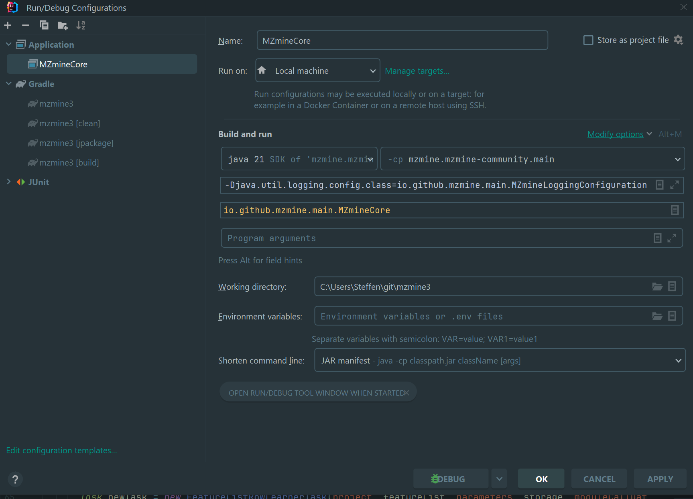

Development in IntelliJ¶
Set up¶
- Fork the mzmine (https://github.com/mzmine/mzmine3) GitHub repository (needs free GitHub account) (See https://help.github.com/en/github/getting-started-with-github/fork-a-repo)
- Download & Install IntelliJ IDEA (there is a free educational license for students and teachers) from https://www.jetbrains.com/idea/download/
- Download & Install the current JDK. We recommend the OpenJDK. However, you can also use any other distribution, e.g., the Oracle JDK. This can be done from within IntelliJ. Open File/Project Structure (CTRL+ALT+SHIFT+S) and select SDKs and add the latest JDK with the +button:
 4. Add your GitHub account via Settings/Version Control/GitHub +button. Below exemplified with the Log in with Token... option:
- Log in with Token… Generate - redirects to GitHub
- Make sure to select the Workflow scope to avoid conflicts that arise from changing GitHub actions
4. Add your GitHub account via Settings/Version Control/GitHub +button. Below exemplified with the Log in with Token... option:
- Log in with Token… Generate - redirects to GitHub
- Make sure to select the Workflow scope to avoid conflicts that arise from changing GitHub actions

 5. Clone GitHub project via version control: File/New/Project from version control use your user name to get your fork:
5. Clone GitHub project via version control: File/New/Project from version control use your user name to get your fork: https://github.com/YOUR USERNAME/mzmine3.git

- Make sure that gradle runs and updates the project. Otherwise, click on Reload Gradle Project. Now the project structure (CTRL+SHIFT+ALT+S) should show the source, test, and resource folders which are described in the build.gradle.


-
Click on Add a Configuration. Select “Application” from the template list). via the + button (don’t just edit the template):
- Main class:
io.github.mzmine.main.MZmineCore - Environment var:
-Djava.util.logging.config.class=io.github.mzmine.main.MZmineLoggingConfiguration -Xmx12G
- Main class:
-
Run or debug with this configuration

Code formatter¶
The code formatter is important for contributions to the main version of MZmine and each java file should contain the license header.
1. Import the style format from mzmine-intellij-code-formater.xml
2. Apply format to any file with CTRL+ALT+L
3. Can also be applied on each file saved or each commited change (see below)
4. Better exclude specific file formats from being formatted (see below screenshot 2)


Copyright header¶
- Add the license header to each file - the easiest way is to add the copyright profile to intelliJ
- Import the copyright from
mzmine_intellij_licence_header.xmlor create a new one with the exact text specified inlicense_header.txt - Add a new scope for all project files
- Apply after file save or commit operation or run the Update copyright... action


Useful settings¶
Faster building¶
- Activate auto building (consumes more resources)
- Set Settings/Gradle/build and run to IntelliJ
- Activate HotSwap to automatically load changed classes during debugging


Save and commit actions: Apply copyright, format, etc¶
Select any actions to perform when a file is saved or committed.


Live templates¶
Live templates are used to add custom entries to the code completion, e.g., to quickly create a class-specific logger. Access Settings/Editor/Live Templates (CTRL+ALT+S on Windows) and add a new template (+ button). Define the abbreviation to trigger autocompletion at this statement, define the template text, and change the target context (“Java”) at the bottom. The template below generates a logger after typing log and pressing CTRL+SPACE. The variable $CLASS_NAME$ was set to represent the current className() under Edit variable.
The template:
private static final java.util.logging.Logger logger = java.util.logging.Logger.getLogger($CLASSNAME$.class.getName());
private static final Logger logger = Logger.getLogger(Scan.class.getName());

Another example to create Javadoc links for @l . The variable (here $target$) places the cursor.

Troubleshooting¶
Correct JDK selection¶
Make sure the correct JDK is set in these places: 1. File/Project Structure/SDKs 2. File/Settings/Build, Execution, Deployment/Build Tools → Gradle → Gradle JVM → “Project SDK” this will update automatically if the project SDK changes. 3. File/Settings/Build, Execution, Deployment/Java Compiler → Project Bytecode version → 17 (for JDK 17) Correct run configuration: Select Default JRE (this will update with the project sdk) or select the correct one manually.
Could not target platform¶
Error: When building via gradlew: “Could not target platform: 'Java SE 17' using tool chain: 'JDK 13 (13)'” Solution (Windows): Set the JAVA_HOME environment variable to the JDK 17 root directory. See https://docs.oracle.com/cd/E19182-01/821-0917/inst_jdk_javahome_t/index.html
Gradle project not imported¶
If gradle tool window is not shown: 1. To import the Gradle project navigate to the build.gradle in the project tool window right click → import gradle project. The gradle tool window should now be visible. 2. To update the imports click the update gradle project button in the gradle tool window